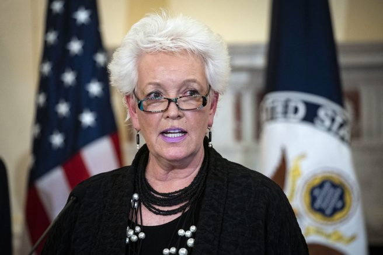
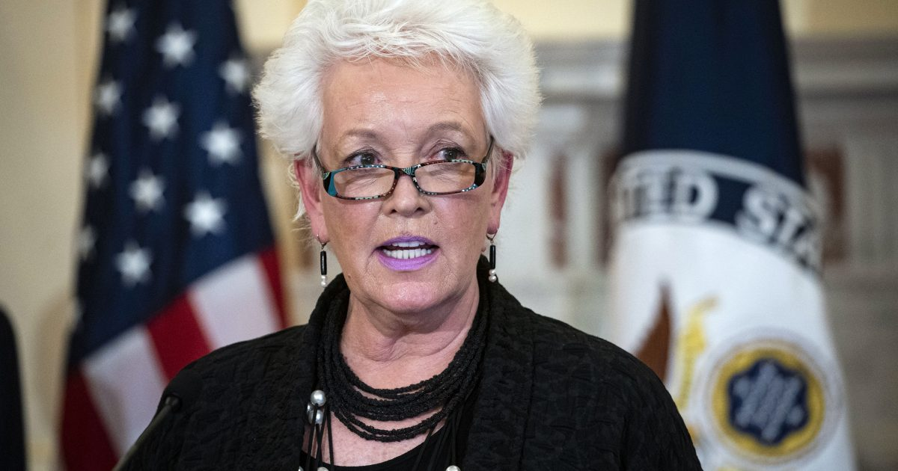

Former USAID administrator becomes global COVID-19 response coordinator

OAN Newsroom
The Biden administration has appointed a new coordinator for its global COVID-19 response.On Monday, Secretary of State Antony Blinken said the former administrator for the Agency for International Development, Gayle Smith, will take on the role.
This comes as many countries are putting pressure on the U.S. to share coronavirus vaccine supplies with them.Smith addressed these concerns on Monday.
'Our challenges now are to first shorten the lifespan of a borderless pandemic that is destroying lives and livelihoods all over the world, and the second is to ensure that we can prevent, detect and respond to those future global health threats we know are coming,' she stated.'American leadership is desperately needed and I’m extremely confident we can rise to the occasion.'
Check out @ONECampaign’s new series #Pandemica, which shines a spotlight on the global vaccine access crisis.Vaccine access isn’t just about what’s fair, it’s also about what’s smart – we can’t end a global pandemic until we stop the virus from spreading mutating everywhere.https://t.co/qwADeHeTqf — Gayle Smith (@GayleSmith) March 25, 2021
While in office, President Trump balked at the idea of vaccine sharing until every American had the chance to receive one.
Posted On: 2021-04-06T00:00:00

Content Date: 2021-04-06
Download Date: 2021-04-16
Document ID: L0C049Z0N